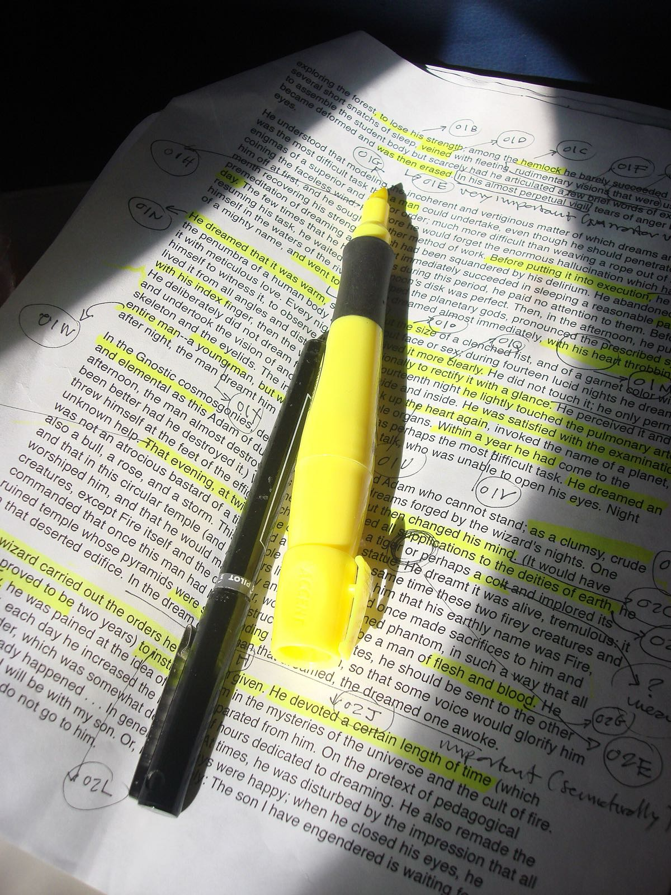

형광펜 공부는 왜 효과가 낮을까? — 기억에 오래 남는 공부법은 따로 있다
"중요한 데는 형광펜으로 쫙 그어 둬."
미국 켄트 주립대학의 심리학자 존 던로스키는 교사들에게 쓴 글을 이런 장면으로 엽니다. 생물 시험 전날 밤, 한 고등학생이 이제야 공부를 시작합니다. 형광펜을 꺼내 교과서를 읽으며 칠해 나가고, 중요해 보이는 문장은 다시 읽고, 거의 밤을 새웁니다. 그는 이런 학생이 전혀 드물지 않다고 덧붙입니다[1].
아침이 되면 교과서는 노랗게 물들어 있습니다. 그런데 시험지 앞에서 떠오르는 것은 '분명 칠한 데였는데' 하는 쪽 위치의 기억뿐이고, 정작 그 줄에 무엇이 적혀 있었는지는 비어 있곤 합니다. 시험이 끝난 교실에서 흔히 들리는 말입니다.

형광펜은 글자를 '눈에 띄게' 만들 뿐, 머릿속에 '남게' 만들지는 않습니다. 기억에 남는 것은 주의를 기울이고 다시 꺼내 본 것입니다. 게다가 온 쪽을 칠하면 그 눈에 띔마저 사라집니다.
이 글은 형광펜을 든 학생, 그 교과서를 넘겨 보는 부모, 공부법을 일러 줘야 하는 교사를 위해 씁니다. 결론부터 말씀드리면, 형광펜이 기억을 돕는 원리는 실제로 있지만 그 효과는 생각보다 작고 조건이 까다롭습니다. 남게 만드는 쪽은 읽은 것을 책 없이 떠올려 보는 일, 즉 인출 연습(retrieval practice)입니다. 출발점은 형광펜이 기대는 원리인 고립 효과(isolation effect)입니다.
눈에 띄는 것이 기억된다 — 폰 레스토프 효과
1933년 독일의 헤트비히 폰 레스토프는 비슷한 항목들이 늘어선 목록 사이에 성질이 다른 항목 하나를 끼워 넣으면 그 하나가 더 잘 기억된다는 결과를 발표했습니다. 그의 이름을 따 폰 레스토프 효과, 또는 고립 효과라고 부릅니다. 비슷한 자극이 함께 제시될 때 나머지와 다른 하나가 기억될 가능성이 높다는 것이고, 그 '다름'은 크기, 모양, 색, 간격, 그리고 밑줄로도 만들 수 있습니다[2].
형광펜이 기대는 원리가 바로 이것입니다. 까만 글자가 빽빽한 쪽에서 노란 줄 하나는 확실히 튑니다. 그러니 '형광펜은 효과가 없다'고 잘라 말하는 것도 정확하지 않습니다. 눈에 띄게 만드는 힘은 실제로 있습니다.
다만 이 효과의 정의에는 조건이 들어 있습니다. 나머지와 달라야 합니다. 한 줄만 칠한 쪽에서 그 줄은 튀지만, 쪽 전체가 노랗다면 노란색은 더 이상 다름이 아니라 배경입니다. 단체 사진에서 한 사람만 빨간 옷을 입었으면 그 사람부터 보이지만, 모두 빨간 옷을 입었으면 아무도 먼저 보이지 않는 것과 같습니다. 이것은 효과의 정의에서 끌어낸 추론이고, 칠한 분량에 따라 효과가 얼마나 줄어드는지를 정면으로 잰 연구는 따로 확인하지 못했습니다.
눈에 띈 것도 몇 초면 흩어진다
눈에 띄었다는 것은 주의를 끌었다는 뜻이지, 머릿속에 자리를 잡았다는 뜻은 아닙니다. 주의를 받은 정보가 얼마나 빨리 흩어지는지를 보여 준 고전 실험이 있습니다.
1959년 미국 인디애나 대학의 로이드 피터슨과 마거릿 피터슨은 대학생 24명에게 자음 세 글자를 불러 준 뒤 곧바로 세 자리 숫자 하나를 주고, 거기서부터 3이나 4씩 거꾸로 소리 내어 세게 했습니다. 머릿속으로 글자를 되뇌지 못하게 막으려는 장치였습니다. 그리고 3초에서 18초 사이의 정해진 시간이 지나면 신호를 주고 글자를 말하게 했습니다[3].
결과는 가파릅니다. 논문의 그래프로 보면 3초 뒤에는 열에 여덟 가까이 맞혔지만 18초 뒤에는 열에 하나 꼴로 떨어졌습니다. 본문에 적힌 수치로도 15초와 18초 조건을 묶은 정답률은 실험 단계별로 8~15%에 머물렀습니다[3].
흔히 '단기기억은 15~30초'라고들 하는데, 숫자로 보면 이 값은 자료마다 다릅니다. 영어 위키백과의 단기기억 문서 한 편 안에서도 되뇌기 없이 약 18초, 평균 10~20초, 길게는 30초까지라는 서술이 함께 나옵니다. 정보가 흩어지는 까닭이 시간이 지나 저절로 사라져서인지, 다른 정보에 밀려서인지도 아직 다툼이 있습니다. 같은 문서는 잠깐 담아 두는 단기기억과, 담아 둔 것을 굴려 쓰는 작업기억을 같은 것으로 보지 않습니다[4].
숫자보다 중요한 게 하나 있습니다. 피터슨의 학생들이 빨리 잊은 것은 되뇌지 못하게 막혔을 때였습니다. 머릿속에서 계속 다루지 않으면, 방금 주의를 끈 것도 금세 흩어집니다. 문장에 노란 줄을 긋는 몇 초 동안 그 문장은 분명 주의를 받습니다. 하지만 줄을 긋는 일 자체는 그 문장을 다시 떠올리게 하지 않습니다. 손은 다음 줄로 넘어가고, 노란 자국은 종이에 남습니다.
형광펜 연구가 실제로 보여 준 것
그렇다면 실제 공부에서 형광펜은 얼마나 도움이 될까요. 2013년 던로스키를 포함한 인지·교육 심리학자 다섯 명은 학생 누구나 쉽게 쓸 수 있는 학습법 10가지를 골라, 나이와 능력이 다른 학생, 여러 종류의 교재와 시험에서 효과가 두루 나타나는지를 따져 등급을 매겼습니다. 형광펜과 다시 읽기를 목록에 넣은 이유는 학생들이 이 둘에 크게 의지한다고 답하기 때문이었습니다[5].
결과에서 형광펜(밑줄 긋기 포함)은 요약하기, 다시 읽기와 함께 '낮은 효용'으로 분류됐습니다. 연구진의 표현으로는, 학생 대부분이 다시 읽기와 형광펜을 쓴다고 답하지만 이 방법들은 성적을 꾸준히 올려 주지 못하므로 다른 방법으로 바꿔 쓰는 편이 낫습니다. 가장 높은 등급은 연습 시험과 분산 학습 두 가지였습니다[5].
던로스키는 교사용 해설에서 조금 더 풀어 씁니다. 그냥 읽기와 견주었을 때 형광펜은 공군 훈련생, 어린이, 대학생 누구에게도 도움이 되지 않은 것으로 나타났습니다. 한 연구에서는 형광펜을 그으며 읽은 학생들이 글 여러 곳의 내용을 이어 추론해야 하는 이해 시험에서 오히려 더 낮은 점수를 받았습니다. 그는 칠하는 동안 개별 개념에 매달리느라 개념들 사이의 연결을 생각할 시간이 줄었을 수 있다고 봅니다[1].
그래도 전혀 효과가 없는 것은 아니다
그 뒤 나온 메타분석은 그림을 조금 더 섬세하게 만듭니다. 2022년에 나온 한 메타분석은 1938년부터 2019년까지 나온 논문 36편에서 효과크기 85개를 모아, 학생이 직접 형광펜을 긋게 한 경우와 중요한 곳을 미리 칠해 준 경우를 나눠 분석했습니다. 효과크기는 두 집단의 평균 차이를 점수의 퍼짐(표준편차)으로 나눈 값으로, 0.36이면 평균이 표준편차의 3분의 1 남짓만큼 높다는 뜻입니다[6].
| 누가 칠했나 | 내용 기억 | 내용 이해 |
|---|---|---|
| 학생이 직접 | 0.36 — 도움 됨 | 0.20 — 뚜렷한 효과 없음 |
| 교사가 골라 칠해 줌 | 0.44 — 도움 됨 | 0.44 — 도움 됨 |
학생이 직접 칠한 경우를 학교급으로 나누면 대학생에게서는 도움이 됐지만(0.39), 초·중·고 학생에게서는 뚜렷한 효과가 없었습니다(0.24). 반면 교사가 칠해 준 경우는 대학생(0.41)과 초·중·고 학생(0.48) 모두에게 도움이 됐습니다[6].
남는 것은 꺼내 본 것이다 — 인출 연습
그렇다면 높은 등급을 받은 쪽은 어떻게 다를까요. 2006년 미국 세인트루이스 워싱턴 대학교의 헨리 로디거와 제프리 카피키가 한 실험이 그 차이를 선명하게 보여 줍니다. 대학생 180명이 짧은 설명문을 공부했습니다. 한 집단은 5분씩 네 번 읽기만 했고, 한 집단은 세 번 읽고 한 번은 빈 종이에 기억나는 대로 적었으며, 마지막 집단은 한 번 읽고 세 번을 적었습니다. 적은 답에 대해 맞았는지 알려 주지도 않았습니다[7].
5분 뒤 시험에서는 읽기만 한 집단이 가장 잘했습니다. 글 내용의 83%를 떠올렸고, 세 번 읽고 한 번 적은 집단이 78%, 한 번 읽고 세 번 적은 집단이 71%였습니다. 그런데 일주일 뒤에는 순서가 뒤집혔습니다. 세 번 적은 집단이 61%, 한 번 적은 집단이 56%, 읽기만 한 집단은 40%였습니다. 읽기만 한 학생들은 지문을 평균 14.2번 읽었고, 세 번 적은 학생들은 3.4번 읽었을 뿐인데도 그랬습니다[7].
눈여겨볼 대목이 하나 더 있습니다. 공부를 마친 직후 '일주일 뒤에 얼마나 기억할 것 같은가'를 7점 척도로 물었더니, 읽기만 한 집단이 4.8점으로 가장 자신 있어 했고 세 번 적은 집단은 4.0점이었습니다[7]. 실제 결과와는 반대입니다. 여러 번 읽고 칠한 교과서가 주는 '이제 안다'는 느낌은, 공부한 그날 밤에는 사실이지만 일주일 뒤의 길잡이로는 믿을 만하지 않습니다.
시험은 배운 것을 재는 수단일 뿐 아니라, 배움을 키우는 강력한 수단이다.
— Roediger & Karpicke, Psychological Science 2006 (번역)[7]
이 생각은 새것이 아닙니다. 던로스키에 따르면 연습 시험이 성적을 높인다는 것은 1909년 일리노이 대학의 한 박사과정 학생이 이미 보였고, 그 뒤 100년 넘는 연구가 쌓였습니다[1].
연수 자료에 자주 나오는 '학습 피라미드' 그림이 있습니다. 강의 듣기 5%, 읽기 10%에서 시작해 남을 가르치면 90%가 남는다는 그 그림입니다. 이 숫자의 출처로 거론되는 원 연구는 남아 있지 않아 방법을 확인할 수 없고[8], 2007년의 한 검토는 이 피라미드를 받쳐 줄 신뢰할 만한 연구를 찾지 못했다고 적었습니다[9]. 떠올려 보는 공부가 효과적이라는 것은 위와 같은 실험이 받쳐 주지만, 피라미드의 퍼센트는 근거로 쓸 숫자가 아닙니다.
형광펜을 내려놓지 않고 쓰는 법
그렇다고 형광펜을 빼앗을 일은 아닙니다. 던로스키 자신도 논문을 읽을 때 쓰는 애용 형광펜이 있다고 하면서, 형광펜은 읽고 공부할 때의 '애착 담요' 같은 것이라 빼앗지 않겠다고 말합니다. 대신 이렇게 덧붙입니다.
형광펜 긋기는 여정의 시작일 뿐이다. 읽고 칠한 다음에는 더 효과적인 방법으로 다시 공부해야 한다.
— John Dunlosky, American Educator 2013 (번역)[1]
그가 같은 글에서 권하는 '더 효과적인 방법'을 형광펜과 이어 붙이면 이렇게 됩니다[1].
- 칠한 곳을 질문으로 바꿉니다. 노트나 교과서의 핵심을 손으로 가리고 먼저 적어 본 뒤 정답과 맞춰 봅니다. 앞면에 용어, 뒷면에 답을 적은 낱말 카드도 같은 일을 합니다.
- 고르기보다 떠올리기. 객관식으로 정답을 알아보는 것보다 기억에서 직접 꺼내 적는 연습이 더 이롭습니다. 조금 더 힘들지만, 길게 보면 그만큼 돌아옵니다.
- 한 번 맞힐 때까지, 그리고 다른 날 한 번 더. 틀린 카드는 뭉치 맨 뒤로 보내 맞힐 때까지 되풀이하고, 며칠 뒤 다시 꺼내 한 번 더 맞힙니다.
- 몰아서 말고 나눠서. 시험 전날 밤 한 번에 하는 대신, 한 과목에 일주일 두 번쯤 짧은 공부 시간을 잡는 것으로 시작할 수 있습니다.
교사라면 수업 처음이나 끝에 몇 분을 내어 핵심 질문을 던지고, 모두가 답한 뒤 정답과 설명을 주는 방식으로 교실 안에서 같은 효과를 낼 수 있습니다[1]. 앞의 메타분석을 떠올리면, 초·중·고 학생에게 "중요한 데 칠해"라고 맡기기보다 교사가 핵심을 골라 표시해 주는 쪽이 나을 수도 있습니다[6].
필자 한마디
노랗게 물든 교과서를 두고 아이를 탓할 일은 아닙니다. 칠하는 동안 공부하는 느낌이 들고, 그 느낌은 공부한 그날 밤만큼은 틀리지 않으니까요.
"칠한 것은 종이에 남고, 꺼내 본 것은 머리에 남습니다." 형광펜의 힘은 고르는 데서 나오고, 기억의 힘은 떠올리는 데서 나옵니다. 둘을 섞지 않으면 형광펜도 제 몫을 합니다.
다음에 형광펜 뚜껑을 열 때는, 그 줄을 나중에 어떤 질문으로 바꿀지 한 번만 생각해 보세요.
형광펜은 비슷한 것들 사이에서 다른 하나가 더 잘 기억되는 고립 효과에 기대고 있어, 눈에 띄게 만드는 힘은 실제로 있습니다. 그러나 쪽 전체를 칠하면 튀는 것이 사라지고, 눈에 띈 정보도 되뇌지 않으면 몇 초 만에 흩어집니다. 학습법 10가지 평가에서 형광펜은 낮은 효용으로 분류됐고, 메타분석에서도 학생 스스로 칠한 경우는 기억에 조금 도움이 될 뿐 이해에는 뚜렷한 효과가 없었습니다. 일주일 뒤까지 남는 것은 책을 덮고 떠올려 적어 본 내용이었습니다.
오늘 칠한 줄이 있다면 책을 덮고 물어보세요. 그 줄에 무엇이 적혀 있었는지, 지금 써 낼 수 있나요.
참고문헌
- Dunlosky, J. Strengthening the Student Toolbox: Study Strategies to Boost Learning. American Educator, Fall 2013: 12–21 (형광펜과 추론 이해 결과는 Peterson 1992, 다시 읽기 84%는 Karpicke 등 2009 인용). 링크 ↩
- 위키백과. Von Restorff effect (원 논문: von Restorff, H. Über die Wirkung von Bereichsbildungen im Spurenfeld. Psychologische Forschung, 1933). 링크 ↩
- Peterson, L. R., Peterson, M. J. Short-term retention of individual verbal items. Journal of Experimental Psychology 58(3): 193–198, 1959. 링크 ↩
- 위키백과. Short-term memory. 링크 ↩
- Dunlosky, J., Rawson, K. A., Marsh, E. J., Nathan, M. J., Willingham, D. T. Improving Students' Learning With Effective Learning Techniques: Promising Directions From Cognitive and Educational Psychology. Psychological Science in the Public Interest 14(1): 4–58, 2013. 링크 ↩
- Ponce, H. R., Mayer, R. E., Méndez, E. E. Effects of Learner-Generated Highlighting and Instructor-Provided Highlighting on Learning from Text: A Meta-Analysis. Educational Psychology Review 34(2): 989–1024, 2022. 링크 ↩
- Roediger, H. L., Karpicke, J. D. Test-Enhanced Learning: Taking Memory Tests Improves Long-Term Retention. Psychological Science 17(3): 249–255, 2006. 링크 ↩
- 위키백과. Learning pyramid (원 연구 분실과 방법 불명은 Letrud 2012 인용). 링크 ↩
- Lalley, J. P., Miller, R. H. The Learning Pyramid: Does It Point Teachers in the Right Direction? Education 128(1): 64–79, 2007. 링크 ↩